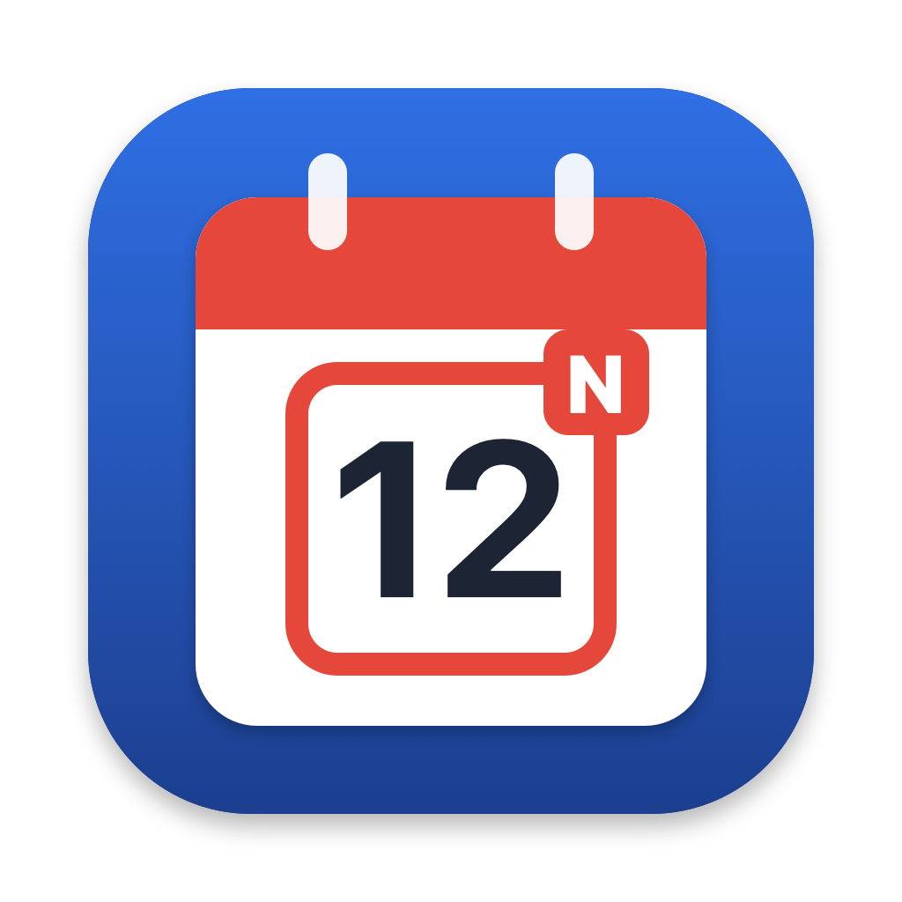

Questions, bug reports or a wrong holiday? Write to andromeda.tve@gmail.com and mention your country, region and municipality.
Where is the app after launch? Kalendarik lives in the menu bar (top right) — it has no Dock icon. Click the calendar icon with today's date to open it; right-click for Settings and Quit.
How do I set my town? Settings → Holidays & sun → choose country, region and municipality. In Andalusia every municipality is available.
What do N, R and L mean? National, regional and local (municipal) holiday.
Why does it say “not yet confirmed”? Local holidays for a year are published by the authorities later than national ones. Kalendarik shows only published official data and tells you when something is missing.
Where does the data come from? Junta de Andalucía (BOJA), INE, calendrier.api.gouv.fr (Licence Ouverte), OpenHolidays (ODbL). Sunrise and sunset are calculated with the NOAA algorithm.
Dudas o un festivo incorrecto: andromeda.tve@gmail.com. Indica país, comunidad y municipio.
Вопросы или неверный праздник: andromeda.tve@gmail.com. Укажите страну, регион и муниципалитет.